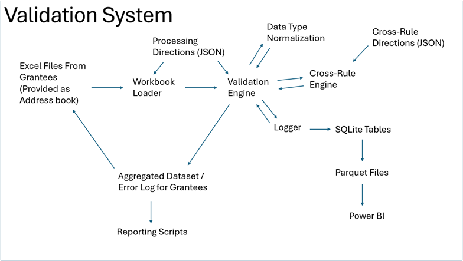

OWS Validation Documentation¶
These pages provide documentation for the various methods and classes that support the OWS validation process, which aims to quickly transform disparate excel spreadsheets into a clean, usable dataset while also recording errors, and producing an error log that can easily be used by data owners to remedy issues.
The implementation as it is presented here also includes SQL logging functionality to a SQLite table, connecting separate runs to allow for fast cross-grant comparison and assessments of state change (over time) for a given grant. If you aren’t interested in the SQL logging and just want the data consolidation and error log creation, this can be toggled when the validation engine is called.
The system itself is dataset agnostic and could be re-implemented to manage data collection in any context where different organizations are submitting formulaically structured datasets.
Certain critical objects (like the file directory) are omitted here for security reasons, but the code is otherwise intact.
The general architecture of the project is laid out below:
